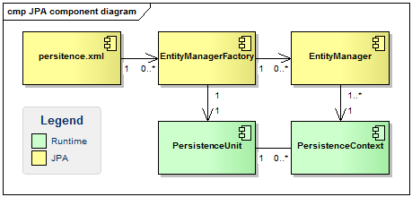
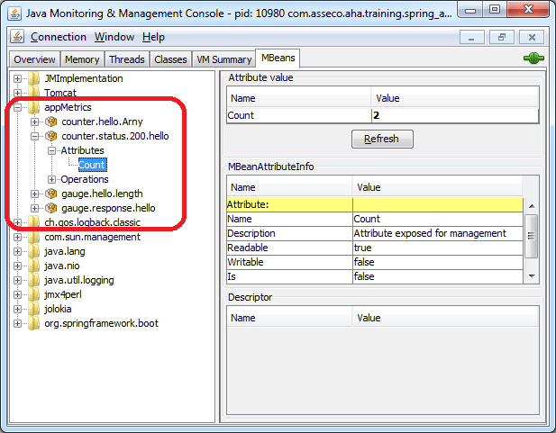

Spring - Advanced
Advanced topics based on Spring Boot
Created by Arnošt Havelka
About me
- Job title: Solution Architect
- O2 employment: Since 1/2015
- Certifications:

1.1 Overview
- Goal:Provide comprehensive infrastructural support for developing enterprise Java applications
- Core support:
- Application Configuration
- Enterprise Configuration
- Testing
- Data Access
1.3 P-namespace
Namespace P (for properties/setters)
<?xml version="1.0" encoding="UTF-8"?>
<beans ... xmlns:p="http://www.springframework.org/schema/p">
<context:component-scan base-package="aha.poc" />
<bean ... p:msg="Message value" p:dao-ref="myDAO"/>
</beans>Note: the injection of collection is not possible (only as reference to the collection bean).
1.4 C-namespace
Namespace C (for constructors)
<?xml version="1.0" encoding="UTF-8"?>
<beans ... xmlns:c="http://www.springframework.org/schema/c">
<context:component-scan base-package="aha.poc" />
<bean ... c:_0="My Value" c:_1-ref="myDAO"/>
</beans>Note: the injection of collection is not possible (only as reference to the collection bean). Other options: c:_dao-ref="myDAO" (for named argument) or c:_-ref="myDAO" (for constructor with just 1 argument)
1.6 SpEL [1/2]
- Reference bean
@Value("#{customBean.message}") private String foo; - Invoking methods, do mathematical, relational and logical operations on values
@Value("#{T(java.lang.Math).random()}") private Double value; @Value("#{counter.total+42}") private Integer value;
1.6 SpEL [2/2]
- Regular expression matching
@Value("#{admin.email matches '[a-zA-Z0-9._%+-]+@[a-zA-Z0-9.-]+\\.com'}") private String email; - Collection manipulation
<property name="chosenCity" value="#{cities[2]}" />
1.7 Java Specifications
1.7.1 JSR-250 [3/3]
Definition:
<!-- process DI, JSR-250, etc. -->
<context:annotation-config/>
<!-- same as annotation-config + scan packages to register beans -->
<context:component-scan/>Usage:
@Component
public class MyService {
@Resource
private MyDao dao;
@Value("${my_message}")
private String msg;
@PostConstruct
private void init() {
msg = "N/A";
}
}1.7.2 JSR-303 - Definition [1/3]
Bean Validation (JSR-303 for version 1.0 + JSR-349 for version 1.1) defines a metadata model and API for JavaBean validation. The metadata source is annotations, with the ability to override and extend the meta-data through the use of XML validation descriptors.
1.7.2 JSR-303 - Usage [2/3]
Validator definition:
<bean id="val" class="o.s.v.beanvalidation.LocalValidatorFactoryBean" />DTO definition:
public class AuditForm {
@NotNull
private Integer id;
@Past(message = "{basicValidationErrorNotPast}")
private Date platnostOd;
@Size(max = 10, message = "Username length exceeded!")
private String username;
}1.7.2 JSR-303 - Usage [3/3]
Usage:
@Autowired
private Validator validator;
private <D> List<String> process(D dto) {
Set<ConstraintViolation<D>> validationResult =
validator.validate(dto);
...
}1.7.3 JSR-330 - Overview [1/2]
JSR-330 is specification of Dependency Injection in java world. It was introduced in JavaEE 6 and supported from Spring 3.0.
<dependency>
<groupId>javax.inject</groupId>
<artifactId>javax.inject</artifactId>
<version>1</version>
</dependency>Usage:
- @Inject instead of Spring’s @Autowired to inject a bean (@Inject has 80% of @Autowired).
- @Named instead of Spring’s @Component to declare a bean.
1.8 Running Spring Application
- Web application listener (XML)
- Web application listener (JavaConfig)
- Custom usage
- WebApplicationInitializer (no web.xml)
1.8.1 Web application listener
[XML]
Add to web.xml:
<context-param>
<param-name>contextConfigLocation</param-name>
<param-value>classpath*:META-INF/spring/app-cfg-*.xml</param-value>
</context-param>
<listener>
<listener-class>o.s.web.context.ContextLoaderListener</listener-class>
</listener>1.8.2 Web application listener
[JavaConfig]
Add to web.xml:
<context-param>
<param-name>contextClass</param-name>
<param-value>o.s.web.context.support.AnnotationConfigWebApplicationContext</param-value>
</context-param>
<listener>
<listener-class>o.s.web.context.ContextLoaderListener</listener-class>
</listener>Add some class with annotation @Configuration
1.8.3 Custom usage
XML configuration:
ApplicationContext ctx =
new ClasspathXmlApplicationContext("one.ctx","two.ctx");
}JavaConfig:
ApplicationContext ctx =
new AnnotationConfigApplicationContext(AppConfig.class);
}1.8.4 WebApplicationInitializer
Add dependency on Servlet API (version 3+) and implement WebApplicationInitializer as:
public class AppInitializer implements WebApplicationInitializer {
@Override
public void onStartup(ServletContext servletContext) throws ServletException {
WebApplicationContext context = getContext();
servletContext.addListener(new ContextLoaderListener(context));
ServletRegistration.Dynamic dispatcher = servletContext.addServlet("DispatcherServlet", new DispatcherServlet(context));
dispatcher.setLoadOnStartup(1);
dispatcher.addMapping("/*");
}
private AnnotationConfigWebApplicationContext getContext() {
AnnotationConfigWebApplicationContext context = new AnnotationConfigWebApplicationContext();
context.setConfigLocation("xxx.yyy.zzz.config");
return context;
}
}Add some class with annotation @Configuration to package xxx.yyy.zzz.config
1.9 Spring Notification
- Up to Spring 4.1
- Definition of event & listener
- Usage (send message)
- From Spring 4.2
- Definition of event & listener
- Usage (send message)
1.9.1 Def. (up to Spring 4.1)
Definition of event
public class CustomEvent extends ApplicationEvent {
private String msg;
public CustomEvent(Object source, final String msg) {
super(source);
this.msg = msg;
}
}Definition of listener
@Component
public class CustomListener implements ApplicationListener<CustomEvent> {
@Override
public void onApplicationEvent(CustomEvent ce) {
...
}
}
See: package notification in the project sat-core
1.9.3 Definition (Spring 4.2+)
Definition of event
public class CityEvent extends MyEvent<City> {
private boolean inEurope;
public CityEvent(Object source, final String inEurope) {
super(source);
this.inEurope = inEurope;
}
}Definition of listener
@Component
public class CustomListener {
@EventListener(condition = "#event.inEurope")
public void onApplicationEvent(MyEvent<City> event) {
...
}
}
1.9.4 Usage (Spring 4.2+)
Definition of event
@RunWith(SpringJUnit4ClassRunner.clasz)
@SpringApplicationConfiguration(classes = NotificationApplication.clasz)
public class NotificationTest {
@Autowired
private ApplicationContext ctx;
@Test
public void contextLoads() {
ctx.publishEvent(new CityEvent(ctx, true));
ctx.publishEvent(new CityEvent(ctx, false));
}
}See: NotificationTest.java in project sat-core
1.10 Context Configuration
- Simple configuratin in XML
- Simple configuratin in JavaConfig
- Global configuratin in XML
- Global configuratin in JavaConfig
- Abstract configuratin in JavaConfig
2.1 Application configuration
- Place holder - to manage configuration properties (placeholders)
- Place override - to override bean's properties
2.1.1 Place holder
- Usage of system property (${my.env})
- Usage of default values
<?xml version="1.0" encoding="UTF-8"?>
<beans xmlns="http://www.springframework.org/schema/beans" ...>
<context:property-placeholder location="classpath:db-${my.env}.properties"
properties-ref="defaultConfig" ignore-resource-not-found="true" />
<util:map id="defaultConfig">
<entry key="mySecretValue" value="7"/>
</util:map>
</beans>2.1.2 Place override
Bean definition:
@Component
public class CustomBean {
private String message = "default message";
}Define overridden rule:
customBean.message=custom messageLoad place-override definition (rules):
<?xml version="1.0" encoding="UTF-8"?>
<beans xmlns="http://www.springframework.org/schema/beans" ...>
<context:property-override location="classpath:override.properties"/>
</beans>2.2 Profiles
- Overview
- Configuration in XML
- Configuration in JavaConfig
- Profile activation
- Profile activation
- Custom annotation (for configuration)
- Example of usage
See: article Spring Profiles Example
2.2.2 XML Configuration
<?xml version="1.0" encoding="UTF-8"?>
<beans xmlns="http://www.springframework.org/schema/beans" ...>
<beans>
<import resource="classpath:/META-INF/spring/app-context-base.xml"/>
</beans>
<beans profile="dev">
<import resource="classpath:/META-INF/spring/app-context-dev.xml"/>
</beans>
<beans profile="prod">
<import resource="classpath:/META-INF/spring/app-context-prod.xml"/>
</beans>
</beans>2.2.3 Annotation Configuration
Profile scope definition:
@Component
@Profile("dev")
public class UserDAOImpl implements UserDAO {
}
@Component
@Profile("prod")
public class UserDAOImpl implements UserDAO {
}2.2.5 Custom annotation
(for configuration)
Definition of profile annotation:
@Target(ElementType.TYPE)
@Retention(RetentionPolicy.RUNTIME)
@Profile("test")
public @interface Mock {
}Usage:
@Component
@Mock
public class UserDAOMock implements UserDAO {
...
}2.2.6 Example of usage
<?xml version="1.0" encoding="UTF-8"?>
<beans xmlns="http://www.springframework.org/schema/beans" ...>
<bean profile="dev">
<jdbc:embedded-database id="dataSource">
<jdbc:script location="classpath:com/bank/config/sql/schema.sql"/>
<jdbc:script location="classpath:com/bank/config/sql/test-data.sql"/>
</jdbc:embedded-database>
</bean>
<bean profile="prod">
<jee:jndi-lookup id="dataSource" jndi-name="java:comp/env/jdbc/datasource"/>
</bean>
</beans>2.3 Proxy for scope
- Overview
- XML Configuration
- Annotation Configuration
2.3.1 Overview
- Proxy purpose - handle beans lifecycle correctly
- Scopes:
- Singleton (default) - just one instance
- Prototype - always new instance
- Request (for web) - an instance per HTTP request
- Session (for web) - an instance per HTTP session
- Flow (for Spring WebFlow) or Step (for Spring Batch) - special Spring scopes
- Custom (to be implemented) - an instance per custom rule
2.3.2 XML Configuration
Single bean:
<?xml version="1.0" encoding="UTF-8"?>
<beans xmlns="http://www.springframework.org/schema/beans" ...>
<bean id="wsService" p:service-ref="sessinService" />
<bean id="sessinService" scope="session">
<aop:scoped-proxy/>
</bean>
</beans>All beans:
<?xml version="1.0" encoding="UTF-8"?>
<beans xmlns="http://www.springframework.org/schema/beans" ...>
<context:component-scan base-package="x.y.z" scoped-proxy="interfaces¦target_class" />
</beans>2.3.3 Annotation Configuration
@Component
public class WsService {
@Autowire
private MyService service;
}
@Component
@Scope(value = "prototype", proxyMode = ScopedProxyMode.INTERFACES)
public class PrivateService implement MyService {
...
}2.4 Classpath scanning [1/2]
Use case: find some classes (in classpath) based on some criteria.
Solution: use ClassPathScanningCandidateComponentProvider.
ClassPathScanningCandidateComponentProvider provider = new ClassPathScanningCandidateComponentProvider(false);
// Filter to include only classes that have a particular annotation.
provider.addIncludeFilter(new AnnotationTypeFilter(MyAnnotation.clasz));
// Find classes in the given package (or subpackages)
Set<BeanDefinition> beans = provider.findCandidateComponents("com.xyz.abc");
for (BeanDefinition bd : beans) {
// The BeanDefinition class gives access to the Class<?> and other attributes.
}2.4 Classpath scanning [2/2]
- Filters
- AnnotationTypeFilter - based on annotations (on the class)
- AssignableTypeFilter - based on superclass or interface
- RegexPatternTypeFilter - based on a fully qualified class name against a regular expression.
2.5 Component scan with no no-args constructor bean
- Overview
- Solution
- Conclusion
2.5.1 Overview
Bean definition:@Component
public class User {
public User(String name) {
...
}
}
Bean usage:@Bean
public User userArny() {
return new User("Arny");
}
Spring error:Caused by: o.s.b.BeanInstantiationException: Could not instantiate bean
class [com...config.User]: No default constructor found;
nested exception is java.lang.NoSuchMethodException: com.asseco.aha.training.spring_advanced.core.config.User.<init>()
at org.springframework.beans.factory.support.SimpleInstantiationStrategy.instantiate(SimpleInstantiationStrategy.java:85) ~[spring-beans-4.0.8.RELEASE.jar:4.0.8.RELEASE]
at org.springframework.beans.factory.support.AbstractAutowireCapableBeanFactory.instantiateBean(AbstractAutowireCapableBeanFactory.java:1070) ~[spring-beans-4.0.8.RELEASE.jar:4.0.8.RELEASE]
... 16 common frames omitted
2.5.2 Solution [1/4]
Variant 1
Modify bean definition for autowiring with default values (annotations @Autowired and @Value).
Spring Bean@Component
public class User {
@Autowired
public User(@Value("") String name) {
...
}
}
Example: JavaConfigApplication.java
2.5.2 Solution [2/4]
Variant 2
Just not define POJO as Spring Bean. It will be marked as bean by JavaConfig.
public class User {
public User(String name) {
...
}
}2.5.2 Solution [3/4]
Variant 3
Remove component scan from JavaConfig.
@Configuration
@EnableAutoConfiguration
public class JavaConfigApplication {
...
}2.5.2 Solution [4/4]
Variant 4
Use excluding feature in component scan.
@Configuration
@ComponentScan(basePackages = { "com.asseco.aha.training.spring_advanced.core.config" },
excludeFilters = @ComponentScan.Filter(
type = FilterType.ANNOTATION,
value = Component.class))
@EnableAutoConfiguration
public class JavaConfigApplication {
...
}2.5.3 Conclusion
- If component scanning is enabled, spring will try to create a bean even though a bean of that class has already been defined in the spring config xml.
- However if the bean defined in the spring config file and the auto-discovered bean have the same name, spring will not to create a new bean while it does component scanning.
- If a bean does not have a no-args constructor, at-least one of the constructors must be auto-wired.
- If no constructor is auto-wired, spring will try to create an object using default no-args constructor.
3.1 Spring life-cycle
- Life-cycle Schema
- Bean initialization order
- Bean disposal order
3.1.1 Life-cycle Schema
3.1.2 Bean Initialization Order
- [1] Load all bean defintions to create ordered graph
- [2] Instantiate and run BeanFactoryPostProcessors
- [3] Instantiate each bean
- [3] Set bean's properties
- [4] BeanPostProcessor (for all beans) - postProcessBeforeInitialization
- [4] @PostConstruct (for bean instance)
- [4] InitializingBean (for bean instance) - afterPropertiesSet
- [4] XML (for bean instance) - init-method
- [4] BeanPostProcessor (for all beans) - postProcessAfterInitialization
3.1.3 Bean Disposal Order
- @PreDestroy (for bean instance)
- DisposableBean (for bean instance) - destroy
- XML (for bean instance) - destroy-method
3.2 Factory bean
- Overview
- Factory Methods
- POJOs as Factory Beans
- Factory Bean
3.2.1 Overview
- Factory Methods
- Simple usage for static methods (the old singletons)
- POJOs as Factory Beans
- Simple usage
- The FactoryBean Interface
- Spring uses (such approach) for looking up JNDI objects, creating remote proxies, configuring data access (e.g. Hibernate, JPA, etc.).
- Beans with FactoryBean interface are detected automatically.
3.2.2 Factory Methods
Class definition:
public class OldSingleton {
private static OldSingleton singleton = new OldSingleton();
private OldSingleton() {...}
public OldSingleton getInstance() {
return singleton;
}
}
Spring definition:
<?xml version="1.0" encoding="UTF-8"?>
<beans xmlns="http://www.springframework.org/schema/beans" ...>
<bean id="foo" class="abc.OldSingleton" factory-method="getInstance" />
</beans>3.2.3 POJOs as Factory Beans
POJO definition:
public class PojoFactory {
public MyService getInstance() {...}
}Spring definition:
<?xml version="1.0" encoding="UTF-8"?>
<beans xmlns="http://www.springframework.org/schema/beans" ...>
<bean id="pojoFactory" class="abc.PojoFactory" />
<bean id="myService" factory-bean="pojoFactory" factory-method="getInstance" />
</beans>3.2.4 Factory Bean
FactoryBean implementation:
public class MyFactoryBean implements FactoryBean<MyService> {
// ... instantiate ClientService class as clientService...
public MyService getObject() throws Exception { return clientService; }
public Class<?> getObjectType() { return ClientService.class }
public MyService isSingleton() throws Exception { return true ¦ false; }
}Spring definition:
<?xml version="1.0" encoding="UTF-8"?>
<beans xmlns="http://www.springframework.org/schema/beans" ...>
<bean id="myFB" class="abc.MyFactoryBean" />
<bean id="myService" p:service-ref="myFB" />
</beans>3.3 BFPP - overview [1/2]
- Called after bean definition is loaded, but before bean is instantiated.
- Useful for applying modifications on some beans or groups of beans.
- Just implement interface BeanFactoryPostProcessor
- Example: PropertyPlaceholderConfigurer
3.3 BFPP - usage [2/2]
BFPP implementation:
public class MyBfpp implements BeanFactoryPostProcessor {
public void postProcessBeanFactory(
ConfigurableListableBeanFactory beanFactory) throws BeansException {
String[] beanNames = beanFactory.getBeanDefinitionNames();
...
}
}Spring definition:
<?xml version="1.0" encoding="UTF-8"?>
<beans xmlns="http://www.springframework.org/schema/beans" ...>
<bean id="myBfpp" class="abc.MyBfpp" />
</beans>3.4 BPP - overview [1/2]
- Can modify bean instance in any way.
- Just implement interface BeanPostProcessor
- Example: BeanValidationPostProcessor (for JSR-303), CommonAnnotationBeanPostProcessor (for JSR-250), RequiredAnnotationBeanPostProcessor, etc.
3.4 BPP - usage [2/2]
BPP implementation:
public class MyBpp implements BeanPostProcessor {
@Override
public Object postProcessBeforeInitialization(Object bean, String beanName)
throws BeansException { ... }
@Override
public Object postProcessAfterInitialization(Object bean, String beanName)
throws BeansException { ... }
}Spring definition:
<?xml version="1.0" encoding="UTF-8"?>
<beans xmlns="http://www.springframework.org/schema/beans" ...>
<bean id="myBpp" class="abc.MyBpp" />
</beans>4. Testing
- Overview
- Spring configuration for testing
- Special annotations
- JUnit Rules
- Controller
- Springockito
4.1 Overview
- Test Types & Approaches
- Test Levels
- Mocks & Stubs
- Rules for writting tests
- Unit tests
4.1.1 Test Types & Approaches
- Types:
- Static (e.g. review of documentation, inspection, etc.)
- Dynamic (execution of program againt test case)
- Approaches:
- Black box (examining functionality without any knowledge of internal implementation)
- White box(tests internal structures or workings of a program)
- Gray box (executing tests at the user, or black-box level, with having knowledge of internal data structures and algorithms for purposes of designing tests)
4.1.2 Test Levels
- Unit (component testing)
- Integration (testing interfaces between components against a software design)
- System(tests a completely integrated system to verify that it meets its requirement)
- Acceptance (UAT)
4.1.3 Mocks & Stubs
| Advantages | Disadvantages | |
|---|---|---|
| Mock |
|
|
| Stub |
|
|
4.1.4 Rules for writting tests
- Independency
- Performance
- Only in test package
- High test coverage != good tests
4.1.5 Unit tests
- Usage of JUnit
- Mocking - EasyMock + Mockito + PowerMock
- Hamcrest - clearer syntax/declarations and customized assertion matchers
4.2 Spring configuration for testing
- Spring way
- Spring Boot way (XML)
- Spring Boot way (JavaConfig)
4.2.1 Spring way (XML)
Default XML location
Configuration:
<?xml version="1.0" encoding="UTF-8"?>
<beans xmlns="http://www.springframework.org/schema/beans" ...>
<bean id="user" class="com...core.config.User" c:name="Michel"/>
</beans>Usage:
// path is com/asseco/aha/training/spring_advanced/core/config/XmlDefaultConfigTest-context.xml
@ContextConfiguration
@RunWith(SpringJUnit4ClassRunner.class)
public class XmlDefaultConfigTest {
...
}4.2.2 Spring way (XML)
Define XML location
Configuration:
<?xml version="1.0" encoding="UTF-8"?>
<beans xmlns="http://www.springframework.org/schema/beans" ...>
<bean id="user" class="com...core.config.User" c:name="Arny"/>
</beans>Usage:
@RunWith(SpringJUnit4ClassRunner.clasz)
@ContextConfiguration(locations = "classpath:spring/xml-config.xml")
public class XmlDirectConfigTest {
...
}4.2.3 Spring Boot way (JavaConfig)
Configuration:
@SpringBootApplication
//@ComponentScan("com.asseco.aha.training.spring_advanced.core.config")
public class JavaConfigApplication {
...
}Usage:
@RunWith(SpringJUnit4ClassRunner.clasz)
@SpringApplicationConfiguration(classes = JavaConfigApplication.clasz)
public class JavaConfigTest {
...
}4.3 Special annotations
- @Timed
- @Repeat
- @ActiveProfiles
- @IfProfileValue
4.3.1 @Timed
Indicates that the annotated test method must finish execution in a specified time period (in milliseconds).
@Test
@Timed(millis = 10)
public void testSpringTimeout() throws InterruptedException {
Thread.sleep(50);
assertThat(Boolean.TRUE, equalTo(1 == 1));
}Note: spring annotation waits till the end to raise an exception. On the other hand JUnit solution raise the exception immediately when the test takes too long.
Example: TimedAnnotationTest.java4.3.2 @Repeat
Indicates that the annotated test method must be executed repeatedly.
@Test
@Repeat(10)
public void testRepeatAnnotation() {
assertThat(2, equalTo(1 + 1));
}4.3.3 @ActiveProfiles
Activation profile for tests:
@RunWith(SpringJUnit4ClassRunner.clasz)
@SpringApplicationConfiguration(
classes = { MyConfig.clasz, RichardConfig.clasz, BarbaraConfig.clasz })
@ActiveProfiles("richard")
public class RichardConfigTest {
@Test
public void testHello() {
assertThat(user.getName(), equalTo("Richard"));
}
}Example: RichardConfigTest.java
4.3.4 @IfProfileValue
Define test with @IfProfileValue annotation.
@RunWith(SpringJUnit4ClassRunner.clasz)
@SpringApplicationConfiguration(classes = { MyConfig.clasz, BarbaraConfig.clasz })
@ActiveProfiles("richard")
public class RichardConfigTest {
@Test
@IfProfileValue(name = "test-group", values = { "training" })
public void testHello() {
assertThat(user.getName(), not(equalTo("Arny")));
}
}Use profile by calling JVM with e.g. -Dtest-group=training. Annotation reflects JVM parameters, environments properties (e.g. OS), etc.
Example: BarbaraConfigTest.java4.4.1 TestWatcher
Logging of test method can be done by TestWatcher clacc from JUnit.
/**
* Log method execution (start & stop).
*/
@Rule
public TestRule watcher = new TestWatcher() {
protected void starting(Description description) {
LOG.debug("Starting test {}#{}", description.getTestClass().getSimpleName(), description.getMethodName());
}
protected void finished(Description description) {
LOG.debug("Finished test {}#{}", description.getTestClass().getSimpleName(), description.getMethodName());
}
protected void skipped(AssumptionViolatedException e, Description description) {
LOG.debug("Skipped test {}#{}", description.getTestClass(), description.getMethodName());
}
};4.6 Springockito
Springockito is a small extension to spring that simplifies way of creation mockito mocks in the integration tests' related context xml files.
XML
<?xml version="1.0" encoding="UTF-8"?>
<beans ... xmlns:mockito="http://www.mockito.org/spring/mockito" xsi:schemaLocation="..." >
<mockito:mock id="myService" class="com.asseco.aha.training.spring_advanced.core.testing.HelloService" />
</beans>Annotation
@ReplaceWithMock
@Autowired
private HelloService helloService;6.1 Goal
- Hide away large amount of boilerplate codes
- Separate business logic and technology configuration
- Declarative transaction management (XML or annotations)
- Automatic connection management (automatic acquire and release)
- Intelligent exception handling
6.2 Transaction Theory
- ACID Principle
- Read Phenomena
- Isolation Levels
- Propagation Levels
- Proxy Phenomena
6.2.1 ACID Principle
- Atomic - all operations (changes) are done or none
- Consistent - database integrity is honoured (no constraint is violated)
- Isolated - transaction are isolated form each other
- Durable - committed changes are permanent
6.2.2 Read Phenomena
- Dirty reads - when a transaction is allowed to read data from a row that has been modified by another running transaction and not yet committed
- Non-repeatable reads - when during the course of a transaction, a row is retrieved twice and the values within the row differ between reads
- Phantom reads - when two identical queries are executed, and the collection of rows returned by the second query is different from the first
6.2.3 Isolation Levels
- READ_UNCOMMITTED (lowest level) - allows Dirty read
- READ_COMMITTED (default) - does not allow Dirty read
- REPEATABLE_READ - does not allow Dirty read and prevents non-repeatable read
- SERIALIZABLE (slowest) - prevents all phenomenons
6.2.4 Propagation Levels [1/3]
- REQUIRED (default) - If there’s an existing transaction in progress, the current method should run within this transaction. Otherwise, it should start a new transaction and run within its own transaction.
- REQUIRES_NEW - The current method must start a new transaction and run within its own transaction. If there’s an existing transaction in progress, it should be suspended.
- SUPPORTS - If there’s an existing transaction in progress, the current method can run within this transaction. Otherwise, it is not necessary to run within a transaction.
6.2.4 Propagation Levels [2/3]
- NOT_SUPPORTED - The current method should not run within a transaction. If there’s an existing transaction in progress, it should be suspended.
- MANDATORY - The current method must run within a transaction. If there’s no existing transaction in progress, an exception will be thrown.
- NEVER - The current method should not run within a transaction. If there’s an existing transaction in progress, an exception will be thrown.
6.2.4 Propagation Levels [3/3]
- NESTED (unique Spring feature) - If there’s an existing transaction in progress, the current method should run within the nested transaction (supported by the JDBC 3.0 save point feature) of this transaction. Otherwise, it should start a new transaction and run within its own transaction.
6.2.5 Question
Sample code:
@Transactional
public City getCity(long id) {
audit("city", id);
...
new RuntimeException("some exception is raised here");
}
@Transactional(propagation=Propagation.REQUIRES_NEW)
public void audit(String entity, long id) {
// do some audit logic
}What's the propagation level in method audit? Is the audit record stored or not (by calling method getCity)?
6.3 JDBC
- Embedded H2 with Spring
- Embedded H2 with Spring Boot
- Loading SQL scripts
- Loading Liquibase scripts
- JDBC Template usage
- Intelligent exception handling
6.3.1 Embedded HSQL with Spring
<beans ... xmlns:jdbc="http://www.springframework.org/schema/jdbc"
xsi:schemaLocation="...
http://www.springframework.org/schema/jdbc http://www.springframework.org/schema/jdbc/spring-jdbc-4.0.xsd">
<!-- Embedded (in-memory) database. -->
<jdbc:embedded-database id="dataSourceHSQL" type="HSQL">
<jdbc:script location="classpath:schema.sql" encoding="UTF-8"/>
<jdbc:script location="classpath:data.sql" encoding="UTF-8"/>
</jdbc:embedded-database>
</beans>
6.3.2 Embedded H2 with Spring Boot
Maven dependency (+ dependency for JDBC driver - e.g. hsqldb):
<dependency/>
<groupId/>org.springframework.boot</groupId/>
<artifactId/>spring-boot-starter-jdbc</artifactId/>
</dependency/>DB properties (in YML file):
spring:
datasource:
platform:H2
url=jdbc:h2:mem
username=sa
password=
driverClassName=org.h2.Driver.class6.3.3 Loading SQL scripts
Use these files on classpath (located in src/main/resources or src/test/resources):
- schema.sql - load DB structures (create schema by DDL)
- data.sql - load DB data (by DML)
See: project sat-jdbc
6.3.4 Loading Liquibase scripts
Maven dependency (plus dependency from chapter 6.3.2):
<dependency/>
<groupId/>org.liquibase</groupId/>
<artifactId/>liquibase-core</artifactId/>
</dependency/>Use file /db/changelog/db.changelog-master.yaml on classpath (located in src/main/resources or src/test/resources) to load Liquibase script.
See: project sat-liquibase
6.3.5 JDBC Template usage
@RunWith(SpringJUnit4ClassRunner.clasz)
@SpringApplicationConfiguration(classes = JdbcApplication.clasz)
public class JdbcTests {
@Autowired
JdbcTemplate jt;
private static final String SQL = "select count(*) from CATCIS";
@Test
public void testCount() {
Integer count = jt.queryForObject(SQL, Integer.clasz);
assertThat(count, equalTo(7));
}
}
See: JdbcTests.java in project sat-jdbc
6.3.6 Intelligent exception handling
The idea is to hide technology exceptions (SQL, JDBC, JPA, Hibernate, iBatis, etc.) and re-throw independent Spring exceptions. To do so just add post-processor definition to spring configuration:
<!-- Post processor to apply translation of JPA specific exceptions
upon objects annotated with @Repository annotation. -->
<bean class="o.s.dao.annotation.PersistenceExceptionTranslationPostProcessor" />6.4 JPA
- Component Diagram
- Embedded H2 with Spring
- Embedded H2 with Spring Boot
- Importing data
- Spring Data
- JavaConfig
See: project sat-jpa
6.4.1 Component Diagram
6.4.2 Embedded HSQL with Spring
<!-- Usage of embedded (in-memory) database is described in the chapter 6.3.1. -->
<bean id="transactionManagerHSQL"
class="org.springframework.orm.jpa.JpaTransactionManager" p:entityManagerFactory-ref="entityManagerFactoryHSQL"/>
<bean id="entityManagerFactoryHSQL"
class="org.springframework.orm.jpa.LocalContainerEntityManagerFactoryBean"
p:persistenceProviderClass="org.hibernate.ejb.HibernatePersistence"
p:packagesToScan="com.asseco.aha.training.spring_advanced.jpa.domain"
p:dataSource-ref="dataSourceHSQL"
p:jpaVendorAdapter-ref="jpaVendorAdapterHSQL"/>
<bean id="jpaVendorAdapterHSQL"
class="org.springframework.orm.jpa.vendor.HibernateJpaVendorAdapter">
<property name="database" value="HSQL" />
<property name="showSql" value="true" />
<property name="generateDdl" value="false" />
</bean>6.4.3 Embedded H2 with Spring Boot
Maven dependency:
<dependency/>
<groupId/>org.springframework.boot</groupId/>
<artifactId/>spring-boot-starter-data-jpa</artifactId/>
</dependency/>Optional: DB properties (same as in chapter 6.3.2):
spring:
datasource:
platform:H2
url=jdbc:h2:mem
username=sa
password=
driverClassName=org.h2.Driver.class6.4.4 Importing data
Use file import.sql on classpath (located in src/main/resources or src/test/resources) to import data (to initialize DB).
Example of imported data:
-- AUSTRALIA
insert into city(country, name, state)
values ('Australia', 'Brisbane', 'Queensland')
insert into city(country, name, state)
values ('Australia', 'Melbourne', 'Victoria')
...6.4.5 Spring Data
- Entity Definition
- Repository Definition
- Simple Queries
- Named Queries
- CRUD Operations
- Dynamic Queries
- Mixed Repository
See: project sat-jpa or Spring Data documentation
6.4.5.1 Entity Definition
@Entity
@NamedQueries(value = {
@NamedQuery(
name = "City.findByName",
query = "select c from City c where c.name = ?1"),
@NamedQuery(
name = "City.findByNameAndCountry",
query = "select c from City c where c.name like ?1 and c.country = ?2") })
public class City implements Serializable {
@Id @GeneratedValue private Long id;
@Column(nullable = false) private String name;
@Column(nullable = false) private String state;
@Column(nullable = false) private String country;
...
}6.4.5.2 Repository definition
public interface CityRepository
extends JpaRepository<City, Long>, JpaSpecificationExecutor<City> {
// Page<City> findAll(Pageable pageable); - just for Repository interface
Page<City> findByNameContainingAndCountryContainingAllIgnoringCase(String name, String country, Pageable pageable);
City findByNameAndCountryAllIgnoringCase(String name, String country);
// queries are defined by @NamedQuery (in the entity City)
City findByName(String name);
List<City> findByNameAndCountry(String name, String country);
@Query("SELECT c FROM City c WHERE LOWER(c.name) = LOWER(:name)")
City retrieveByName(@Param("name") String name);
}6.4.5.3 Simple Queries
@RunWith(SpringJUnit4ClassRunner.clasz)
@SpringApplicationConfiguration(classes = JpaApplication.clasz)
@Transactional(readOnly = true)
public class QueryTests extends AbstractCityTests {
@Test
public void testCount() {
long count = cityRepository.count();
assertThat(count, equalTo(15L));
}
@Test
public void testPaging() {
Page<City> page = cityRepository.findAll(new PageRequest(0, 5));
...
}
@Test
public void testSorting() {
Page<City> page = cityRepository.findAll(new PageRequest(0, 5, Sort.Direction.DESC, "country", "name"));
...
}
}See: QueryTests.java in project sat-jpa
6.4.5.4 Named Queries [1/2]
Query definition by @NamedQuery in the entity
@RunWith(SpringJUnit4ClassRunner.clasz)
@SpringApplicationConfiguration(classes = JpaApplication.clasz)
@Transactional(readOnly = true)
public class NamedQueryTests extends AbstractCityTests {
@Test
public void testQueryCityByName() {
City city = cityRepository.findByName("Miami");
...
}
@Test
public void testQueryCityAndCountry() {
List<City> result = cityRepository.findByNameAndCountry("% %", "USA");
...
}
}See: NamedQueryTests.java in project sat-jpa
6.4.5.4 Named Queries [2/2]
Query definition by @Query in the repository interface
@RunWith(SpringJUnit4ClassRunner.clasz)
@SpringApplicationConfiguration(classes = JpaApplication.clasz)
@Transactional(readOnly = true)
public class NamedQueryTests extends AbstractCityTests {
@Test
public void testInterfaceQueryRetrieveByName() {
City city = cityRepository.retrieveByName("prague");
...
}
}See: NamedQueryTests.java in project sat-jpa
6.4.5.5 CRUD Operations
@Transactional(readOnly = false)
@TransactionConfiguration(defaultRollback = true)
public class CrudTests extends AbstractCityTests {
@Test
public void testCreate() {
City city = cityRepository.save(new City("Frankfurt", "Germany", ""));;
...
}
@Test
public void testDelete() {
City city = cityRepository.findByName("Prague");
...
cityRepository.delete(city);
...
}
}See: DynamicQueryTests.java in project sat-jpa
6.4.5.6 Dynamic Queries [1/2]
Define Specification for each desired predicate:
public class CitySpecifications {
public static Specification<City> cityFromState(final String state) {
return new Specification<City>() {
@Override
public Predicate toPredicate(Root<City> root,
CriteriaQuery<?> query, CriteriaBuilder cb) {
return cb.equal(root.get("country"), state);
}
};
}
}6.4.5.6 Dynamic Queries [2/2]
Extend interface JpaSpecificationExecutor<T> in your repository. Key words where, and, or and not are used from utility class Specifications.
@Test
public void testCitiesWithoutStateInUsa() {
List<City> result = cityRepository.findAll(
where(cityHasNoState()).and(cityFromState("USA")),
new Sort("country", "name"));
...
}See: DynamicQueryTests.java in project sat-jpa
6.4.6 Configuration
- Datasource & Error handling BPP
- Entity Manager Factory
- Transaction Manager
6.4.6.1 Datasource & Error handling
Datasource and intelligent exception handling (by BPP):
@Configuration
@EnableTransactionManagement
public class PersistenceJPAConfig{
@Bean
public DataSource dataSource(){
DriverManagerDataSource dataSource = new DriverManagerDataSource();
dataSource.setDriverClassName("com.mysql.jdbc.Driver");
dataSource.setUrl("jdbc:mysql://localhost:3306/spring_jpa");
dataSource.setUsername( "tutorialuser" );
dataSource.setPassword( "tutorialmy5ql" );
return dataSource;
}
@Bean
public PersistenceExceptionTranslationPostProcessor exceptionTranslation(){
return new PersistenceExceptionTranslationPostProcessor();
}
}6.4.6.2 Entity Manager Factory
public class PersistenceJPAConfig{
@Bean
public LocalContainerEntityManagerFactoryBean entityManagerFactory() {
LocalContainerEntityManagerFactoryBean em = new LocalContainerEntityManagerFactoryBean();
em.setDataSource(dataSource());
em.setPackagesToScan(new String[] { "org.baeldung.persistence.model" });
JpaVendorAdapter vendorAdapter = new HibernateJpaVendorAdapter();
em.setJpaVendorAdapter(vendorAdapter);
em.setJpaProperties(additionalProperties());
return em;
}
public Properties additionalProperties() {
Properties properties = new Properties();
properties.setProperty("hibernate.hbm2ddl.auto", "create-drop");
properties.setProperty("hibernate.dialect", "org.hibernate.dialect.MySQL5Dialect");
return properties;
}
}6.4.6.3 Transaction Manager
public class PersistenceJPAConfig {
@Bean
public PlatformTransactionManager transactionManager(EntityManagerFactory emf){
JpaTransactionManager transactionManager = new JpaTransactionManager();
transactionManager.setEntityManagerFactory(emf);
return transactionManager;
}
}6.5 Other Resources
- Explanation of Spring @Transactional
- Explanation of @PersistenceContext/@PersistenceUnit
7. REST (Spring MVC)
- Overview
- Principles
- Methods
- Richardson Maturity Model
- REST Example
- Swagger Documentation
- HATEOAS
- Check implementation
Based on Wikipedia and REST API Tutorial
7.1 Overview
Representational state transfer known as REST is a new architecture approach to create web services.
The concept is based on:
- Proper usage of HTTP features
- All is about (stateless) resources (URI)
- URL represents resource, not an action
- Easy and efficient use, but without strict
- Support for multiple format - what server accepts and client prefers (e.g. XML, JSON, CSV, TXT, etc.)
7.2 Principles 1/2
- Uniform interface
- Resource-Based
- Manipulation of Resources Through Representations
- Self-descriptive Messages
- Hypermedia as the Engine of Application State (HATEOAS)
- Client–server - the separation of clients from servers.
7.2 Principles 2/2
- Stateless - no state is hold on server-side.
- Cacheable - clients can cache responses.
- Layered system - clients do not know whether they are connected directly to the end server (or not).
- Code on demand (optional) - servers can temporarily extend or customize the functionality of a client by the transfer of executable code (Java applets, JS, etc.).
7.3 Methods [1/2]
| Operation | HTTP Method | Description |
|---|---|---|
| Create/Insert | POST | Create a new resource |
| Read/Select | GET | Retrieve a resource |
| Update | PUT | Update an existing resource |
| Update | PATCH | Update minor changes to an existing resource (e.g. one attribute) |
7.3 Methods [1/2]
| Operation | HTTP Method | Description |
|---|---|---|
| Delete/Remove | DELETE | Deletes a resource |
| Document API | OPTION | Provide documentation to exposed API (URL) |
7.4 Richardson Maturity Model
| Level | Name | Description |
|---|---|---|
| 0 | RPC | Call requests against universal service endpoint |
| 1 | Resources | Call requests against specialized resource endpoint |
| 2 | HTTP Verbs | Use HTTP method when invoking the resource |
| 3 | Hypermedia Controls | Use HATEOAS when invoking the resource |
7.5 REST Example
@RequestMapping(
value = "/{id}",
method = RequestMethod.GET,
produces = { MediaType.APPLICATION_JSON_VALUE, MediaType.APPLICATION_XML_VALUE })
public List<City> list(@PathVariable String country,
@PathParam("sorting") String sorting) {
List<City> data = cityService.list(country, sorting);
if (data.size() == 0) {
throw new NoItemFoundException(String.format("No city for country %s was found!", country));
}
return data;
}
@ResponseStatus(HttpStatus.NOT_FOUND)
class NoItemFoundException extends RuntimeException { ... }7.6 Swagger Documentation
@RequestMapping(value = "/"})
@ApiOperation(
value = "Returns list of cities", notes = "Returns a list of found city details.",
response = City.class, responseContainer = "List")
@ApiResponses(value = {
@ApiResponse(code = 200, message = "Successful retrieval of the list of cities (with simple detail)")
})
public List<City> list(
@ApiParam(name = "country", required = false) @PathParam("country") String country,
@ApiParam(name = "sorting", required = false) @PathParam("sorting") String sorting) {
return cityService.list(country, sorting);
}See: Swagger home page
7.7 HATEOAS
Define resource:
public class CityResource extends Resource<City> {
public CityResource(City entity) {
super(entity, linkTo(methodOn(CityHateoasController.class).item(entity.getId())).withSelfRel(), linkTo(
CityHateoasController.class).slash(entity.getId()).withRel("delete"));
}
}Define controller method:
@RequestMapping(value = "/{id}", method = RequestMethod.GET, produces = { "application/hal+json" })
public CityResource item(@PathVariable("id") long id) {
// retrieve data
City city = cityService.item(id);
// prepare resource
return assembler.toResource(city);
}See: project spring-hateoas and example in the class CityHateoasController (project sat-rest)
7.8 Check implementation
- Application (commented code, Spring Boot initialization)
- Controller
- Spring annotations (@RequestMapping, @PathVariable, @PathParam, @RequestBody, etc.)
- Consuming/producing defined MIME types (JSON/XML)
- CRUD operations
- Exception handling
- @JsonView Annotation
- Swagger UI
- Unit tests (RestTemplate, integration test, repository)
- SoapUI tests (CRUD operations, JSON/XML, etc.)
See: project sat-rest
8. JMX
- Goals
- Overview
- Spring way
- JConsole
- Jolokia
- Dropwizard Metrics
- Hibernate statistics
- Other Resources
8.1 Goals
- Allow monitoring JVM metrics of running application (e.g. jconcole, jvisualvm, etc.)
- Gather information about application during runtime
- Trigger operations inside the application
8.2 Overview
- JMX is specified by JSR-160
- MBean is an object which allows operations on attributes or operations (management metadata).
- The management metadata cab be exposed statically (by Java interface) or dynamically during runtime
8.3 Spring way
Define JMX exporter:
<context:mbean-export />Spring configuration:
@Component
@ManagedResource(description = "MBean about entity City")
public class CityMBean {
...
@ManagedAttribute
public String getAuthor() {
return author;
}
@ManagedOperation(description = "Get City by ID")
public String getCityNameById(int id) {
...
}
}8.4 JConsole
- Attach to local JVM process (PID):
jconsole 5353 - Add custom library for classes not available in JDK (e.g. entity City):
jconsole -J-Djava.class.path="%JAVA_HOME%\lib\jconsole.jar;%JAVA_HOME%\lib\tools.jar;%MY_PATH%\sat-rest.jar"
Note: use quotation (character ") on windows - Usage of Hibernate JConsole Plugin
8.5 Jolokia
Expose JMX over HTTP
Add maven dependency:
<dependency>
<groupId>org.jolokia</groupId>
<artifactId>jolokia-core</artifactId>
</dependency>Browse JMX via HTTP, e.g.:
http://localhost:8080/jolokia/read/com.asseco.aha.training.sat-rest:name=cityMBean,type=CityMBean8.6 Dropwizard Metrics
Expose metrics via JMX
Add maven dependency:
<dependency>
<groupId>io.dropwizard.metrics</groupId>
<artifactId>metrics-core</artifactId>
</dependency>Add JMX metrics reporter:
@Autowired
private MetricRegistry registry;
@Bean
public JmxReporter jmxReporter() {
JmxReporter reporter = JmxReporter.forRegistry(registry)
.inDomain("appMetrics").build();
reporter.start();
return reporter;
}8.6 Dropwizard Metrics
Metrics result in JConsole
 Note: some metrics have to be gathered before appearing in JConsole8.7 Hibernate Statistics [1/2]
Define factory bean:
public class HibStatFactoryBean implements FactoryBean<Statistics> {
private HibernateEntityManagerFactory entityManagerFactory;
@Autowired
public void setEntityManagerFactory(EntityManagerFactory entityManagerFactory) {
this.entityManagerFactory =
(HibernateEntityManagerFactory) entityManagerFactory;
}
...
}8.7 Hibernate Statistics [2/2]
Spring configuration:
<bean id="exporter" class="o.s.jmx.export.MBeanExporter"
lazy-init="false">
<property name="beans">
<map>
<entry key="my-app:application=Statistics"
value-ref="hibStatFB"/>
</map>
</property>
</bean>
<bean id="hibStatFB" class="abc.HibStatFactoryBean"
p:entityManagerFactory-ref="entityManagerFactory" />